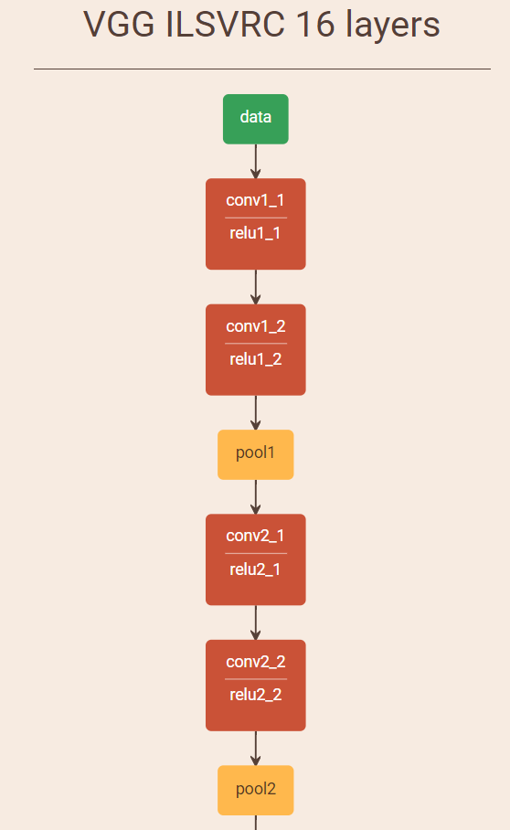
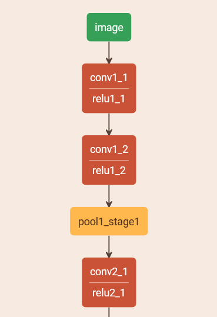

2.1. 模型结构可视化
学习目标
- 目标
- 掌握模型结构可视化方法
- 应用
- 应用Netscope工具可视化模型结构
2.1.1. 模型结构配置文件
pose_deploy.prototxt
input: "image"
layer {
name: "conv1_1"
type: "Convolution"
bottom: "image"
top: "conv1_1"
param {
lr_mult: 1.0
decay_mult: 1
}
param {
lr_mult: 2.0
decay_mult: 0
}
convolution_param {
num_output: 64
pad: 1
kernel_size: 3
weight_filler {
type: "xavier"
}
bias_filler {
type: "constant"
}
dilation: 1
}
}
layer {
name: "relu1_1"
type: "ReLU"
bottom: "conv1_1"
top: "conv1_1"
}
...
layer {
name: "Mconv7_stage6"
type: "Convolution"
bottom: "Mconv6_stage6"
top: "net_output"
param {
lr_mult: 4.0
decay_mult: 1
}
param {
lr_mult: 8.0
decay_mult: 0
}
convolution_param {
num_output: 22
pad: 0
kernel_size: 1
weight_filler {
type: "gaussian"
std: 0.01
}
bias_filler {
type: "constant"
}
dilation: 1
}
}
2.1.2. Netscope
Netscope是个支持prototxt格式描述的神经网络结构的在线可视工具 它可以用来可视化Caffe模型prototxt格式的网络结构
vgg网络结构可视化效果：

手部关键点检测模型结构可视化

2.1.3. 总结
- 模型结构可视化有利于掌握网络结构